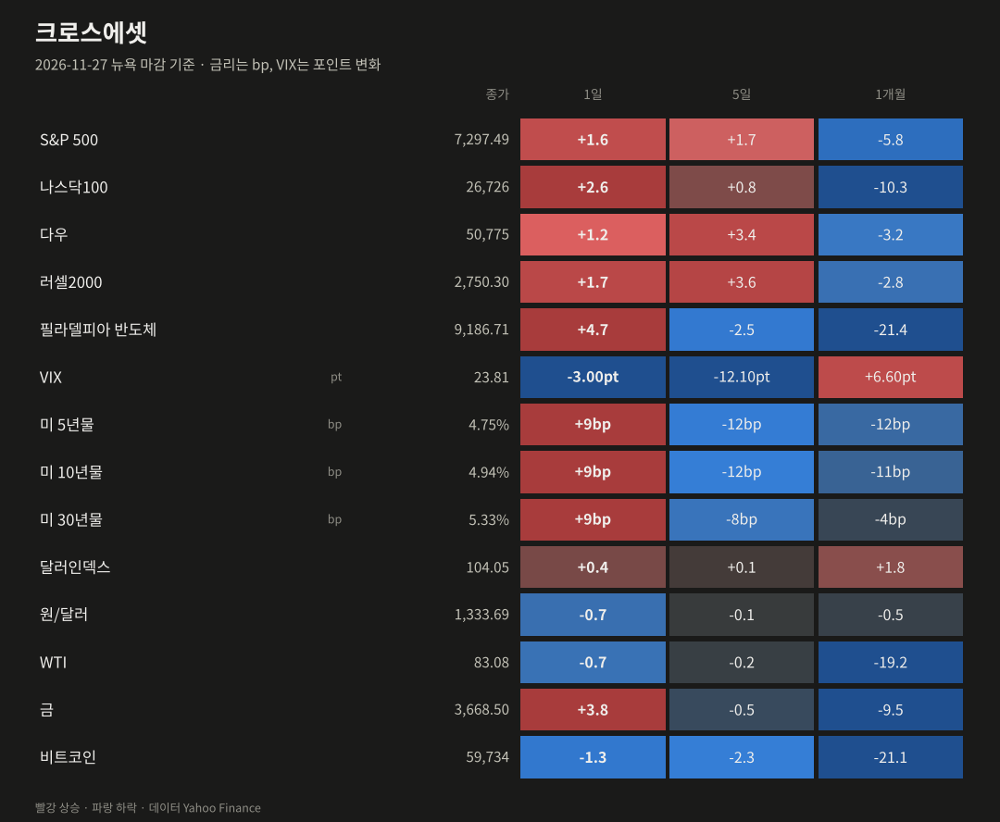
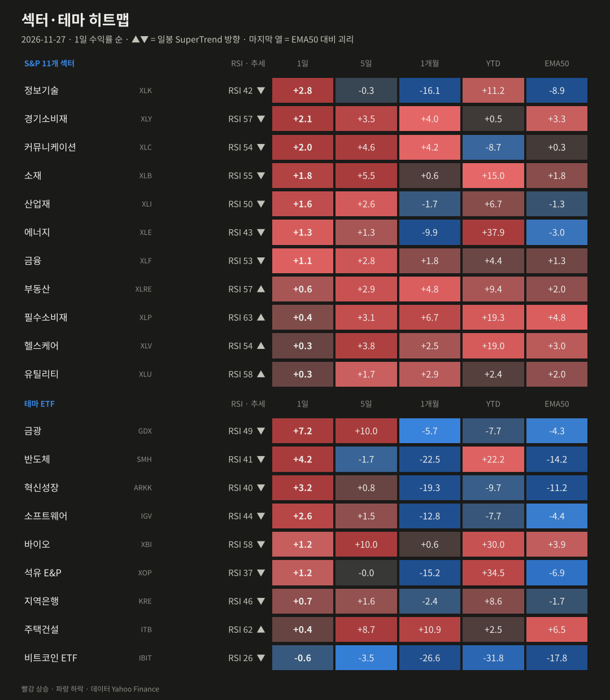
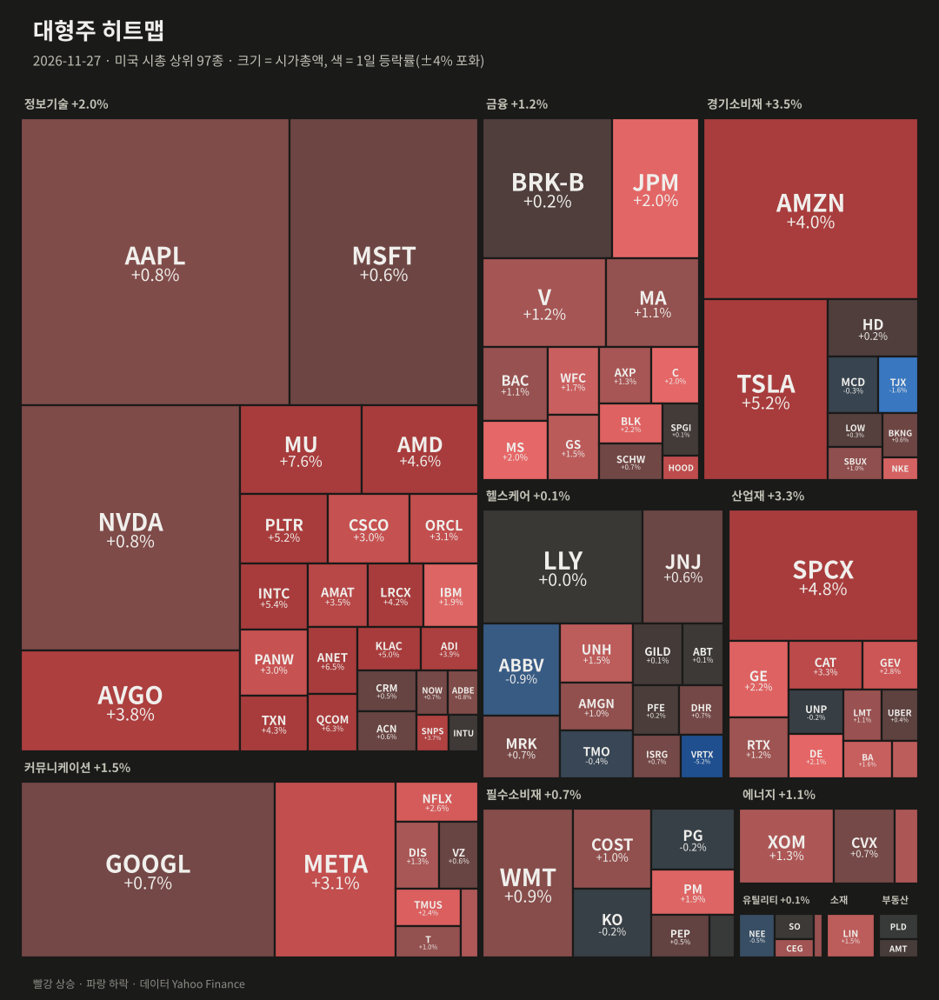
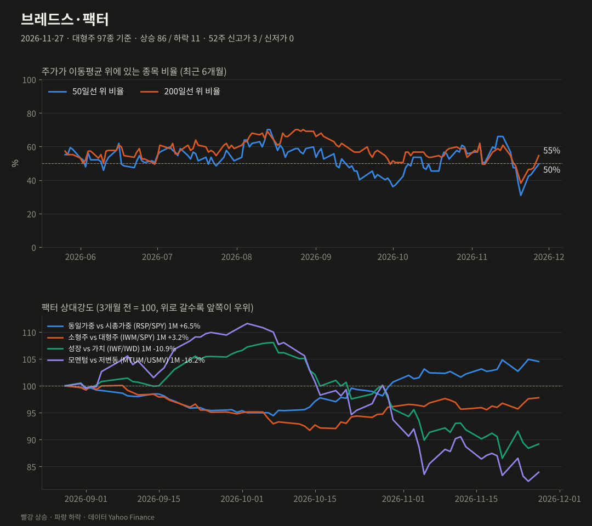
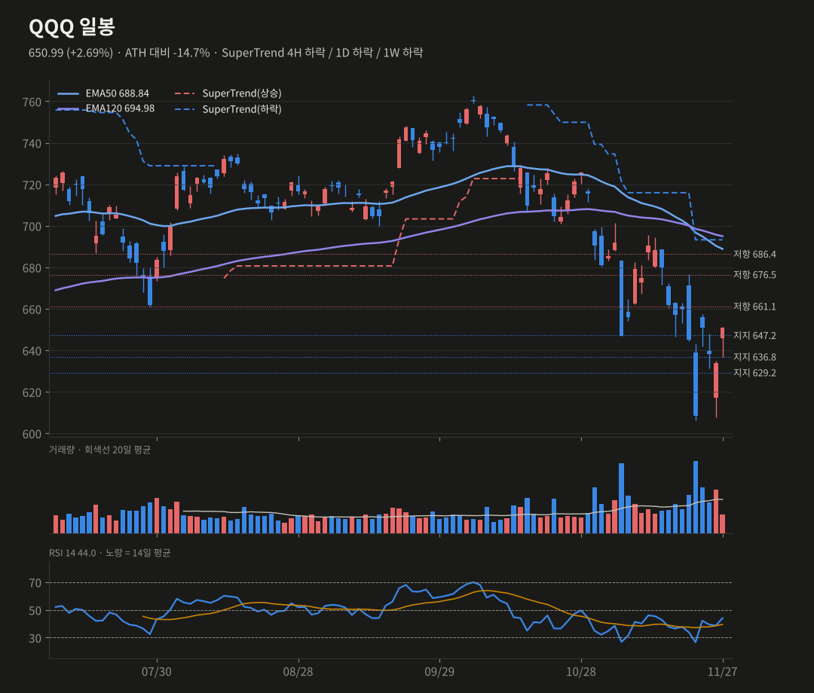
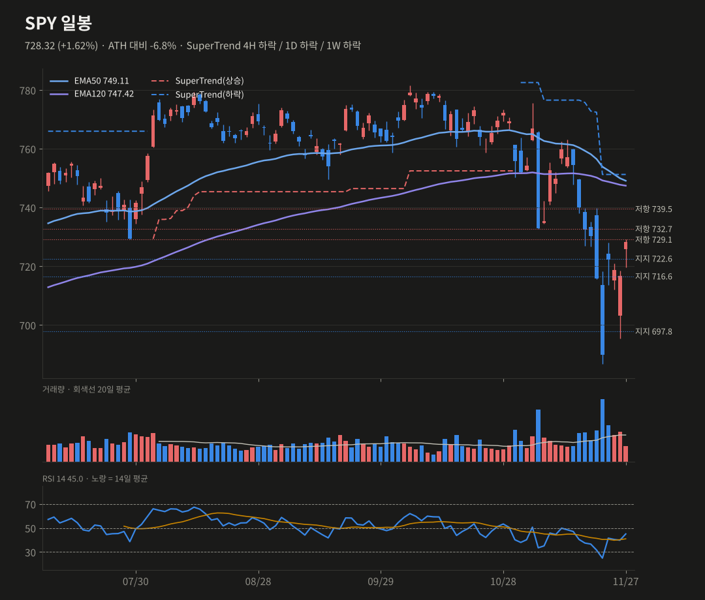
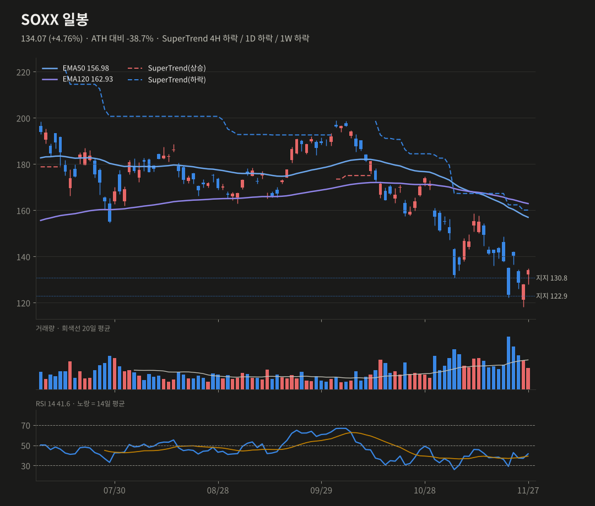
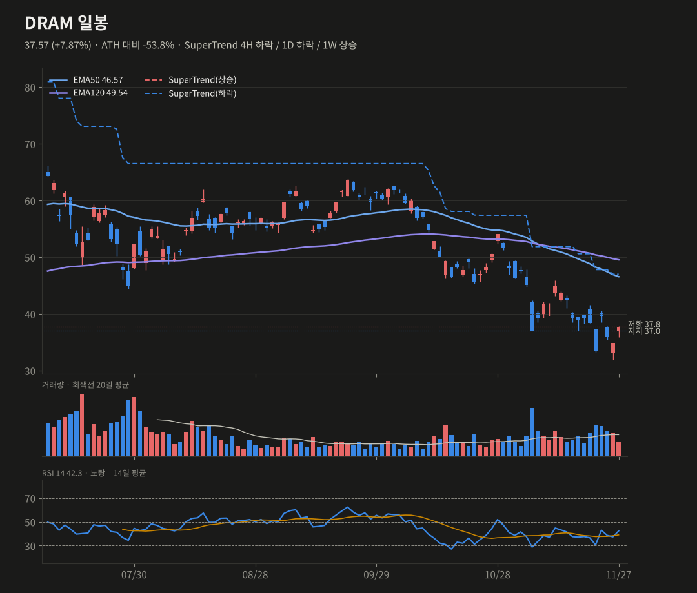

미증시 마감 브리핑
11/27(금) 뉴욕 마감 기준 · 생성 2026-11-28 06:31 KST
반일장에 나스닥100 +2.6%, 이번 주 +6.8%로 전주 낙폭의 약 60%를 되찾았어요.
S&P 5007,297.49+1.60%
나스닥10026,726+2.61%
다우50,775+1.18%
러셀20002,750.30+1.71%
반도체(SOX)9,186.71+4.69%
VIX23.81-3.00pt
미 10년물4.94%+8.80bp
원/달러1,333.69-0.69%
요약
- 반일장에 나스닥100 +2.6%·반도체 +4.7%, 86개 종목이 올랐어요.
- 이번 주 S&P +5.6%·나스닥100 +6.8%, 전주 낙폭 약 60% 회복이에요.
- SPY가 주봉 EMA50 위로 마감해 4종 단기 확률을 모두 5%p 올렸어요.
- 10년물 4.94%(+8.8bp)와 12/4 고용보고서가 다음 주 변수예요.
종합 판단
두 번의 저점 시험(11/20·11/25)을 지킨 지수가 반일장에서 고르게 올라 이번 주에만 전주 낙폭의 약 60%를 되찾았어요. SPY는 주봉 EMA50(723.2) 위에서 주를 마쳐 스윙 확률도 올렸고, QQQ·DRAM은 4H MACD 골든크로스, SOXX는 130.8을 되찾았어요. 다만 거래량이 평소 절반인 반일장이었고 10년물이 4.94%로 다시 올라, 월요일 정상 거래에서 SPY 723대·QQQ 647대를 지키는지가 확인 포인트예요. 12/4 고용보고서와 12/10 FOMC를 앞둔 금리 방향이 다음 변수예요.
두 번의 저점 시험(11/20·11/25)을 지킨 지수가 반일장에서 고르게 올라 이번 주에만 전주 낙폭의 약 60%를 되찾았어요. SPY는 주봉 EMA50(723.2) 위에서 주를 마쳐 스윙 확률도 올렸고, QQQ·DRAM은 4H MACD 골든크로스, SOXX는 130.8을 되찾았어요. 다만 거래량이 평소 절반인 반일장이었고 10년물이 4.94%로 다시 올라, 월요일 정상 거래에서 SPY 723대·QQQ 647대를 지키는지가 확인 포인트예요. 12/4 고용보고서와 12/10 FOMC를 앞둔 금리 방향이 다음 변수예요.
무엇이 시장을 움직였나
- 기술주 반등: AI 수익성 우려가 잦아들며 기술주 매도가 멈췄다는 평가 속에 마이크론 +7.6%, 아리스타 +6.6%, 퀄컴 +6.3%, 인텔 +5.4%, 테슬라 +5.2%였어요. 엔비디아는 +0.8%에 그쳤어요(Yahoo Finance).
- 이번 주 결산(11/20 종가 대비): S&P 500 +5.6%, 나스닥100 +6.8%, 다우 +5.5%, 필라델피아 반도체 +9.3%로 전주 낙폭(S&P −8.6%)의 약 60%를 되찾았어요. 다우는 2022년 이후 가장 좋은 한 주였어요(Quartz).
- 금리 재상승: 10년물이 4.94%(+8.8bp)로 올랐어요. 3분기 GDP가 4.3%로 상향된 뒤 추가 긴축 가능성을 따지는 분위기예요(Yahoo Finance·STL News). 달러인덱스 +0.4%, VIX는 23.8(−3.0pt)로 내려왔어요.
- 금·유가: 금이 +3.8%(3,668.5달러), 금광 ETF가 +7.2%로 강했어요. WTI는 호르무즈 해협 유조선 공격 소식에도 −0.7%(83.1달러)였어요(Yahoo Finance).
- 개별·소비: 버텍스 −5.2%는 신장질환 치료제 심사 기간이 연장된 탓이에요(STL News). 어도비는 연말 온라인 지출이 +6.7%(2,751억 달러) 늘 것으로 봐요(Yahoo Finance).
장 마감 후·시간외
- 반일장 뒤 시간외는 거래가 얇아요: QQQ 650.3(−0.1%), SPY 730.7(+0.3%), SOXX 133.3(−0.6%), DRAM 37.5(−0.2%), 엔비디아 149.9(−0.4%)예요.

| 자산 | 종가 | 1일 | 5일 | 1개월 |
|---|---|---|---|---|
| S&P 500 | 7297.49 | +1.60% | +1.70% | -5.77% |
| 나스닥100 | 26726.39 | +2.61% | +0.79% | -10.35% |
| 다우 | 50774.94 | +1.18% | +3.42% | -3.24% |
| 러셀2000 | 2750.3 | +1.71% | +3.59% | -2.83% |
| 필라델피아 반도체 | 9186.71 | +4.69% | -2.47% | -21.37% |
| VIX | 23.81 | -3.00pt | -12.10pt | +6.60pt |
| 미 5년물 | 4.746 | +8.6bp | -12.0bp | -12.5bp |
| 미 10년물 | 4.936 | +8.8bp | -11.6bp | -10.9bp |
| 미 30년물 | 5.325 | +9.0bp | -7.6bp | -3.6bp |
| 달러인덱스 | 104.05 | +0.36% | +0.14% | +1.82% |
| 원/달러 | 1333.69 | -0.69% | -0.08% | -0.50% |
| WTI | 83.08 | -0.72% | -0.16% | -19.17% |
| 금 | 3668.5 | +3.75% | -0.46% | -9.46% |
| 비트코인 | 59734.15 | -1.26% | -2.33% | -21.14% |

| 섹터·테마 | 1일 | 5일 | 1개월 | YTD | RSI | 일봉 추세 |
|---|---|---|---|---|---|---|
| 금광 GDX | +7.16% | +9.97% | -5.68% | -7.7% | 49 | 하락 |
| 반도체 SMH | +4.17% | -1.66% | -22.48% | +22.2% | 41 | 하락 |
| 혁신성장 ARKK | +3.18% | +0.83% | -19.30% | -9.7% | 40 | 하락 |
| 정보기술 XLK | +2.80% | -0.34% | -16.15% | +11.2% | 42 | 하락 |
| 소프트웨어 IGV | +2.64% | +1.49% | -12.85% | -7.7% | 44 | 하락 |
| 경기소비재 XLY | +2.11% | +3.53% | +4.02% | +0.5% | 57 | 하락 |
| 커뮤니케이션 XLC | +1.99% | +4.59% | +4.21% | -8.7% | 54 | 하락 |
| 소재 XLB | +1.84% | +5.52% | +0.56% | +15.0% | 55 | 하락 |
| 산업재 XLI | +1.60% | +2.60% | -1.74% | +6.7% | 50 | 하락 |
| 에너지 XLE | +1.26% | +1.28% | -9.91% | +37.9% | 43 | 하락 |
| 바이오 XBI | +1.21% | +9.98% | +0.63% | +30.0% | 58 | 하락 |
| 석유 E&P XOP | +1.16% | -0.04% | -15.22% | +34.5% | 37 | 하락 |
| 금융 XLF | +1.15% | +2.84% | +1.84% | +4.4% | 53 | 하락 |
| 지역은행 KRE | +0.74% | +1.57% | -2.44% | +8.6% | 46 | 하락 |
| 부동산 XLRE | +0.64% | +2.94% | +4.77% | +9.4% | 57 | 상승 |
| 필수소비재 XLP | +0.41% | +3.14% | +6.73% | +19.3% | 63 | 상승 |
| 주택건설 ITB | +0.38% | +8.74% | +10.92% | +2.5% | 62 | 상승 |
| 헬스케어 XLV | +0.28% | +3.80% | +2.49% | +19.0% | 54 | 상승 |
| 유틸리티 XLU | +0.28% | +1.67% | +2.92% | +2.4% | 58 | 상승 |
| 비트코인 ETF IBIT | -0.62% | -3.48% | -26.61% | -31.8% | 26 | 하락 |

| 상승 상위 | 1일 | 거래량(20일 대비) | 하락 상위 | 1일 | 거래량 |
|---|---|---|---|---|---|
| MU | +7.60% | x0.72 | VRTX | -5.24% | x1.31 |
| ANET | +6.55% | x0.46 | TJX | -1.59% | x0.45 |
| QCOM | +6.29% | x0.62 | ABBV | -0.88% | x0.72 |
| INTC | +5.38% | x0.47 | NEE | -0.54% | x0.32 |
| PLTR | +5.24% | x0.58 | TMO | -0.36% | x0.52 |
| TSLA | +5.22% | x0.72 | MCD | -0.31% | x0.28 |

대형주 97종: 상승 86 / 하락 11 · 50일선 위 49.5% (전일 45.4%, 5일 전 38.1%) · 200일선 위 54.6% · 52주 신고가 3 / 신저가 0
오른 종목 86, 내린 종목 11로 고르게 올랐고, SMA50 위 비율은 49.5%(전일 45.4%)로 나흘째 늘었어요. 다만 13시 조기 폐장이라 거래량은 평소의 절반 수준(SPY 일봉 0.6배)이었고, 오늘은 시총가중이 동일가중보다 0.4%p 강했어요.
| 팩터 스프레드 | 1일 | 5일 | 1개월 |
|---|---|---|---|
| 동일가중 vs 시총가중 (RSP/SPY) | -0.39% | +1.43% | +6.50% |
| 소형주 vs 대형주 (IWM/SPY) | +0.21% | +1.85% | +3.21% |
| 성장 vs 가치 (IWF/IWD) | +0.89% | -1.53% | -10.88% |
| 모멘텀 vs 저변동 (MTUM/USMV) | +2.04% | -3.53% | -16.17% |
기술적 분석 · 확률
TradingView 설정과 맞춘 지표(EMA50·EMA120, SuperTrend ATR20×4, RSI14, MACD 12/26/9). 확률은 차트 기반 추정치예요.
QQQ 650.99 +2.69%
SuperTrend 4H 하락 / 1D 하락 / 1W 하락 · RSI 44.01
단기 반등 60% (+5) · 스윙 상승 30%
+2.7%로 647.2를 되찾아 651.0에 마감했고 하루 범위의 98%에서 끝났어요. 4H MACD가 골든크로스(히스토그램 −0.38→+0.95)를 냈고 일봉 히스토그램도 −2.50→−0.92로 줄어 단기 5%p 올렸어요. 주봉 EMA50(668.5) 아래라 스윙은 그대로예요.
상방 661.1 돌파 → 665.1(4H SuperTrend), 676.5
하방 647.2 이탈 → 636.8, 629.2
SuperTrend 4H 하락 / 1D 하락 / 1W 하락 · RSI 44.01
단기 반등 60% (+5) · 스윙 상승 30%
+2.7%로 647.2를 되찾아 651.0에 마감했고 하루 범위의 98%에서 끝났어요. 4H MACD가 골든크로스(히스토그램 −0.38→+0.95)를 냈고 일봉 히스토그램도 −2.50→−0.92로 줄어 단기 5%p 올렸어요. 주봉 EMA50(668.5) 아래라 스윙은 그대로예요.
상방 661.1 돌파 → 665.1(4H SuperTrend), 676.5
하방 647.2 이탈 → 636.8, 629.2
SPY 728.32 +1.62%
SuperTrend 4H 하락 / 1D 하락 / 1W 하락 · RSI 45.04
단기 반등 65% (+5) · 스윙 상승 35% (+5)
+1.6%로 728.3에 마감해 주봉 EMA50(723.2) 위에서 한 주를 마쳤어요(11/20 이탈 뒤 처음). 4H MACD 히스토그램이 0.15→1.21로 커졌고 일봉도 −2.92→−1.54로 개선돼 단기·스윙 5%p씩 올렸어요. 반일장 거래량이라 월요일 확인이 필요해요.
상방 729.1 돌파 → 732.7, 734.2(4H SuperTrend)
하방 723.2(주봉 EMA50) 이탈 → 716.6, 697.8
SuperTrend 4H 하락 / 1D 하락 / 1W 하락 · RSI 45.04
단기 반등 65% (+5) · 스윙 상승 35% (+5)
+1.6%로 728.3에 마감해 주봉 EMA50(723.2) 위에서 한 주를 마쳤어요(11/20 이탈 뒤 처음). 4H MACD 히스토그램이 0.15→1.21로 커졌고 일봉도 −2.92→−1.54로 개선돼 단기·스윙 5%p씩 올렸어요. 반일장 거래량이라 월요일 확인이 필요해요.
상방 729.1 돌파 → 732.7, 734.2(4H SuperTrend)
하방 723.2(주봉 EMA50) 이탈 → 716.6, 697.8
SOXX 134.07 +4.76%
SuperTrend 4H 하락 / 1D 하락 / 1W 하락 · RSI 41.56
단기 반등 50% (+5) · 스윙 상승 30% (+5)
+4.8%로 130.8을 되찾아 134.1에 마감했어요. 일봉 MACD 히스토그램이 다시 올라섰고(−0.92→−0.45) 4H도 −0.64→−0.16으로 0선에 다가왔어요. 주봉은 장중 118.2까지 밀렸다가 주봉 EMA120(120.4) 위로 크게 올라 마감해 아래꼬리를 남겨 스윙도 5%p 올렸어요.
상방 147.0(4H EMA50) 회복 → 148.3(4H SuperTrend)
하방 130.8 이탈 → 122.9, 120.4(주봉 EMA120)
SuperTrend 4H 하락 / 1D 하락 / 1W 하락 · RSI 41.56
단기 반등 50% (+5) · 스윙 상승 30% (+5)
+4.8%로 130.8을 되찾아 134.1에 마감했어요. 일봉 MACD 히스토그램이 다시 올라섰고(−0.92→−0.45) 4H도 −0.64→−0.16으로 0선에 다가왔어요. 주봉은 장중 118.2까지 밀렸다가 주봉 EMA120(120.4) 위로 크게 올라 마감해 아래꼬리를 남겨 스윙도 5%p 올렸어요.
상방 147.0(4H EMA50) 회복 → 148.3(4H SuperTrend)
하방 130.8 이탈 → 122.9, 120.4(주봉 EMA120)
DRAM 37.57 +7.87%
SuperTrend 4H 하락 / 1D 하락 / 1W 상승 · RSI 42.34
단기 반등 45% (+5) · 스윙 상승 25%
+7.9%로 37.0을 되찾아 37.57에 마감했어요. 4H MACD 골든크로스(히스토그램 −0.12→+0.06)에 일봉 히스토그램도 −0.23→−0.04로 올라섰어요. 다만 주봉 EMA120(38.42) 아래에서 한 주를 마쳐 스윙은 그대로예요.
상방 38.4(주봉 EMA120) 회복 → 41.9(4H SuperTrend), 42.3(4H EMA50)
하방 37.0 이탈 → 35.9(11/27 저점), 33.4(11/20 종가)
SuperTrend 4H 하락 / 1D 하락 / 1W 상승 · RSI 42.34
단기 반등 45% (+5) · 스윙 상승 25%
+7.9%로 37.0을 되찾아 37.57에 마감했어요. 4H MACD 골든크로스(히스토그램 −0.12→+0.06)에 일봉 히스토그램도 −0.23→−0.04로 올라섰어요. 다만 주봉 EMA120(38.42) 아래에서 한 주를 마쳐 스윙은 그대로예요.
상방 38.4(주봉 EMA120) 회복 → 41.9(4H SuperTrend), 42.3(4H EMA50)
하방 37.0 이탈 → 35.9(11/27 저점), 33.4(11/20 종가)




일정
- 11/29(일) OPEC+ 회의
- 12/4(금) 22:30 11월 고용보고서
- 12/10(목) 04:00 FOMC 결과
출처
- Stock market today: Dow, S&P 500, Nasdaq end holiday week with gains as AI stocks rebound (Yahoo Finance)
- U.S. Stock Market Today: 3 Strong Black Friday Gains (STL News)
- Dow rallies nearly 600 points to close out its best week since 2022 (Quartz)
데이터 Yahoo Finance·Nasdaq. 색은 한국식(빨강 상승·파랑 하락). 투자 판단의 참고 자료예요. 지난 브리핑